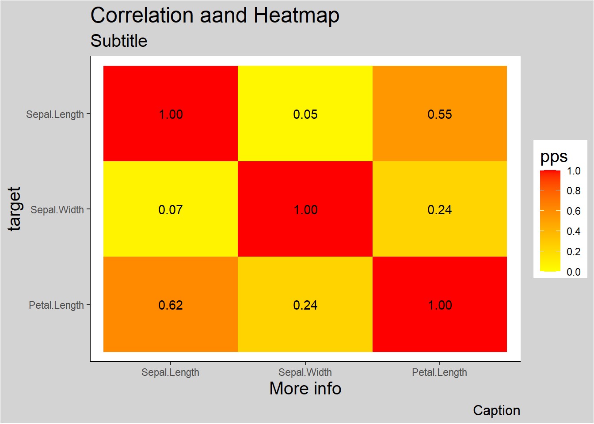

3.4 Bivariate Statistics
Bivariate statistics involve the analysis of relationships between two variables. Understanding these relationships can provide insights into patterns, associations, or (suggestive of) causal connections. Below, we explore the correlation between different types of variables:
- Two Continuous Variables
- Two Discrete Variables
- Categorical and Continuous Variables
Before delving into the analysis, it is critical to consider the following:
- Is the relationship linear or non-linear?
- Linear relationships can be modeled with simpler statistical methods such as Pearson’s correlation, while non-linear relationships may require alternative approaches, such as Spearman’s rank correlation or regression with transformations.
- If the variable is continuous, is it normal and homoskedastic?
- For parametric methods like Pearson’s correlation, assumptions such as normality and homoskedasticity (equal variance) must be met. When these assumptions fail, non-parametric methods like Spearman’s correlation or robust alternatives are preferred.
- How big is your dataset?
- Large datasets can reveal subtle patterns but may lead to statistically significant results that are not practically meaningful. For smaller datasets, careful selection of statistical methods is essential to ensure reliability and validity.
| Categorical | Continuous | |
|---|---|---|
| Categorical | ||
| Continuous |
3.4.1 Two Continuous
set.seed(1)
n = 100 # (sample size)
data = data.frame(A = sample(1:20, replace = TRUE, size = n),
B = sample(1:30, replace = TRUE, size = n))3.4.1.1 Pearson Correlation
Pearson correlation quantifies the strength and direction of a linear relationship between two continuous variables.
Formula:
\[ r = \frac{\sum (x_i - \bar{x})(y_i - \bar{y})}{\sqrt{\sum (x_i - \bar{x})^2 \cdot \sum (y_i - \bar{y})^2}} \] where
\(x_i, y_i\): Individual data points of variables \(X\) and \(Y\).
\(\bar{x}, \bar{y}\): Means of \(X\) and \(Y\).
Assumptions:
- The relationship between variables is linear.
- Variables are normally distributed.
- Data exhibits homoscedasticity (equal variance of \(Y\) for all values of \(X\)).
Use Case:
- Use when the relationship is expected to be linear, and assumptions of normality and homoscedasticity are met.
Interpretation:
- \(r = +1\): Perfect positive linear relationship.
- \(r = -1\): Perfect negative linear relationship.
- \(r = 0\): No linear relationship.
3.4.1.2 Spearman Correlation
Spearman correlation measures the strength of a monotonic relationship between two variables. It ranks the data and calculates correlation based on ranks.
Formula:
\[ \rho = 1 - \frac{6 \sum d_i^2}{n(n^2 -1)} \]
where
- \(d_i\): Difference between the ranks of \(x_i\) and \(y_i\).
- \(n\): Number of paired observations.
Assumptions:
Relationship must be monotonic, not necessarily linear.
No assumptions about the distribution of variables.
Use Case:
- Use when data is ordinal or when normality and linearity assumptions are violated.
Interpretation:
\(\rho = +1\): Perfect positive monotonic relationship.
\(\rho = -1\): Perfect negative monotonic relationship.
\(\rho = 0\): No monotonic relationship.
3.4.1.3 Kendall’s Tau Correlation
Kendall’s Tau measures the strength of a monotonic relationship by comparing concordant and discordant pairs.
Formula:
\[ \tau = \frac{(C- D)}{\binom{n}{2}} \]
where
\(C\): Number of concordant pairs (where ranks of \(X\) and \(Y\) increase or decrease together).
\(D\): Number of discordant pairs (where one rank increases while the other decreases).
\(\binom{n}{2}\): Total number of possible pairs.
Assumptions:
No specific assumptions about the data distribution.
Measures monotonic relationships.
Use Case:
- Preferred for small datasets or when data contains outliers.
Interpretation:
\(\tau = +1\): Perfect positive monotonic relationship.
\(\tau = -1\): Perfect negative monotonic relationship.
\(\tau = 0\): No monotonic relationship.
3.4.1.4 Distance Correlation
Distance Correlation measures both linear and non-linear relationships between variables. It does not require monotonicity or linearity.
Formula:
\[ d Cor = \frac{d Cov(X,Y)}{\sqrt{d Var (X) \cdot d Var (Y)}} \]
where
\(dCov\): Distance covariance between \(X\) and \(Y\).
\(dVar\): Distance variances of \(X\) and \(Y\).
Assumptions:
- No specific assumptions about the relationship (linear, monotonic, or otherwise).
Use Case:
- Use for complex relationships, including non-linear patterns.
Interpretation:
\(dCor = 0\): No association.
\(dCor = 1\): Perfect association.
3.4.1.5 Summary Table of Correlation Methods
| Method | Formula/Approach | Detects Relationship Type | Assumptions | Sensitivity to Outliers | Use Case |
|---|---|---|---|---|---|
| Pearson | Linear covariance | Linear | Normality, homoscedasticity | High | Linear relationships. |
| Spearman | Ranks and monotonicity formula | Monotonic | None | Moderate | Monotonic, non-linear data. |
| Kendall’s Tau | Concordance/discordance ratio | Monotonic | None | Low | Small datasets, robust to outliers. |
| Distance Correlation | Distance-based variance | Linear and non-linear | None | Low | Complex, non-linear relationships. |
3.4.2 Categorical and Continuous
Analyzing the relationship between a categorical variable (binary or multi-class) and a continuous variable requires specialized techniques. These methods assess whether the categorical variable significantly influences the continuous variable or vice versa.
We focus on the following methods:
- Point-Biserial Correlation
- Logistic Regression
- [Analysis of Variance (ANOVA)]
- T-test
3.4.2.1 Point-Biserial Correlation
The Point-Biserial Correlation is a special case of the Pearson correlation used to assess the relationship between a binary categorical variable (coded as 0 and 1) and a continuous variable. It measures the strength and direction of the linear relationship.
Formula:
\[ r_{pb} = \frac{\bar{Y_1} - \bar{Y_0}}{s_Y} \sqrt{\frac{n_1 n_0}{n^2}} \]
where
\(\bar{Y_1}\), \(\bar{Y_0}\): Mean of the continuous variable for the groups coded as 1 and 0, respectively.
\(s_Y\): Standard deviation of the continuous variable.
\(n_1, n_0\): Number of observations in each group (1 and 0).
\(n\): Total number of observations.
Key Properties:
- Range: \(-1\) to \(1\).
- \(r_{pb} = +1\): Perfect positive correlation.
- \(r_{pb} = -1\): Perfect negative correlation.
- \(r_{pb} = 0\): No linear relationship.
- A positive \(r_{pb}\) indicates higher values of the continuous variable are associated with the 1 group, while a negative \(r_{pb}\) indicates the opposite.
Assumptions:
- The binary variable is truly dichotomous (e.g., male/female, success/failure).
- The continuous variable is approximately normally distributed.
- Homogeneity of variance across the two groups (not strictly required but recommended).
Use Case:
- To evaluate the linear relationship between a binary categorical variable and a continuous variable.
3.4.2.2 Logistic Regression
Logistic Regression models the relationship between a binary categorical variable (dependent variable) and one or more independent variables (which may include continuous variables). It predicts the probability of the binary outcome (e.g., success/failure, yes/no).
Refer to 3.4.2.2 for more detail.
Formula:
The logistic regression model is represented as:
\[ \text{logit}(p) = \ln \left( \frac{p}{1 - p} \right) = \beta_0 + \beta_1 X \]
where
\(p\): Probability of the outcome being 1.
\(\beta_0\): Intercept.
\(\beta_1\): Coefficient for the continuous variable \(X\).
\(\text{logit}(p)\): Log-odds of the probability.
Key Features:
Output: Odds ratio or probability of the binary outcome.
Can include multiple predictors (continuous and categorical).
Non-linear transformation ensures predictions are probabilities between 0 and 1.
Assumptions:
The dependent variable is binary.
Observations are independent.
There is a linear relationship between the logit of the dependent variable and the independent variable.
No multicollinearity between predictors.
Use Case:
- To predict the likelihood of a binary outcome based on a continuous predictor (e.g., probability of success given test scores).
# Simulated data
set.seed(123)
x <- rnorm(100, mean = 50, sd = 10) # Continuous predictor
y <- ifelse(x > 55, 1, 0) # Binary outcome based on threshold
# Logistic Regression
logistic_model <- glm(y ~ x, family = binomial)
summary(logistic_model)
#>
#> Call:
#> glm(formula = y ~ x, family = binomial)
#>
#> Coefficients:
#> Estimate Std. Error z value Pr(>|z|)
#> (Intercept) -3749.9 495083.0 -0.008 0.994
#> x 67.9 8966.6 0.008 0.994
#>
#> (Dispersion parameter for binomial family taken to be 1)
#>
#> Null deviance: 1.2217e+02 on 99 degrees of freedom
#> Residual deviance: 1.4317e-07 on 98 degrees of freedom
#> AIC: 4
#>
#> Number of Fisher Scoring iterations: 25
# Predicted probabilities
predicted_probs <- predict(logistic_model, type = "response")
print(head(predicted_probs))
#> 1 2 3 4 5 6
#> -735.6466 -511.3844 703.2134 -307.2281 -267.3187 809.3747# Visualize logistic regression curve
library(ggplot2)
data <- data.frame(x = x, y = y, predicted = predicted_probs)
ggplot(data, aes(x = x, y = predicted)) +
geom_point(aes(y = y), color = "red", alpha = 0.5) +
geom_line(color = "blue") +
labs(title = "Logistic Regression: Continuous vs Binary",
x = "Continuous Predictor", y = "Predicted Probability")
3.4.2.3 Summary Table of Methods (Between Categorical and Continuous)
| Method | Type of Variable Relationship | Key Assumptions | Use Case |
|---|---|---|---|
| Point-Biserial Correlation | Binary Categorical vs Continuous | Linear, normality (continuous) | Assess linear association. |
| Logistic Regression | Continuous → Binary Categorical | Logit-linear relationship | Predict probability of binary outcome. |
| ANOVA | Multi-level Categorical vs Continuous | Normality, homogeneity of variance | Compare means across groups. |
| T-Test | Binary Categorical vs Continuous | Normality, equal variance | Compare means between two groups. |
3.4.3 Two Discrete
When analyzing the relationship between two discrete variables (categorical or ordinal), various methods are available to quantify the degree of association or similarity. These methods can broadly be classified into:
3.4.3.1 Distance Metrics
Distance metrics measure the dissimilarity between two discrete variables and are often used as a proxy for correlation in specific applications like clustering or machine learning.
3.4.3.1.1 Euclidean Distance
\[ d(x, y) = \sqrt{\sum_{i=1}^n (x_i - y_i)^2} \]
Measures the straight-line distance between two variables in Euclidean space.
Sensitive to scaling; variables should be normalized for meaningful comparisons.
3.4.3.1.2 Manhattan Distance
\[ d(x, y) = \sum_{i=1}^n |x_i - y_i| \]
Measures distance by summing the absolute differences along each dimension.
Also called L1 norm; often used in grid-based problems.
3.4.3.1.3 Chebyshev Distance
\[ d(x, y) = \max_{i=1}^n |x_i - y_i| \]
Measures the maximum single-step distance along any dimension.
Useful in discrete, grid-based problems (e.g., chess moves).
3.4.3.1.4 Minkowski Distance
\[ d(x, y) = \left( \sum_{i=1}^n |x_i - y_i|^p \right)^{1/p} \]
Generalized distance metric. Special cases include:
\(p = 1\): Manhattan Distance.
\(p = 2\): Euclidean Distance.
\(p \to \infty\): Chebyshev Distance.
3.4.3.1.5 Canberra Distance
\[ d(x, y) = \sum_{i=1}^n \frac{|x_i - y_i|}{|x_i| + |y_i|} \]
- Emphasizes proportional differences, making it sensitive to smaller values.
3.4.3.1.6 Hamming Distance
\[ d(x, y) = \sum_{i=1}^n I(x_i \neq y_i) \]
Counts the number of differing positions between two sequences.
Widely used in text similarity and binary data.
3.4.3.1.7 Cosine Similarity and Distance
\[ \text{Cosine Similarity} = \frac{\sum_{i=1}^n x_i y_i}{\sqrt{\sum_{i=1}^n x_i^2} \cdot \sqrt{\sum_{i=1}^n y_i^2}} \]
\[ \text{Cosine Distance} = 1 - \text{Cosine Similarity} \]
Measures the angle between two vectors in a high-dimensional space.
Often used in text and document similarity.
3.4.3.1.8 Sum of Absolute Differences
\[ d(x, y) = \sum_{i=1}^n |x_i - y_i| \]
- Equivalent to Manhattan Distance but without coordinate context.
3.4.3.1.9 Sum of Squared Differences
\[ d(x, y) = \sum_{i=1}^n (x_i - y_i)^2 \]
- Equivalent to squared Euclidean Distance.
3.4.3.1.10 Mean Absolute Error
\[ \text{MAE} = \frac{1}{n} \sum_{i=1}^n |x_i - y_i| \]
- Measures average absolute differences.
# Example data
x <- c(1, 2, 3, 4, 5)
y <- c(2, 3, 4, 5, 6)
# Compute distances
euclidean <- sqrt(sum((x - y)^2))
manhattan <- sum(abs(x - y))
chebyshev <- max(abs(x - y))
hamming <- sum(x != y)
cosine_similarity <- sum(x * y) / (sqrt(sum(x^2)) * sqrt(sum(y^2)))
cosine_distance <- 1 - cosine_similarity
# Display results
cat("Euclidean Distance:", euclidean, "\n")
#> Euclidean Distance: 2.236068
cat("Manhattan Distance:", manhattan, "\n")
#> Manhattan Distance: 5
cat("Chebyshev Distance:", chebyshev, "\n")
#> Chebyshev Distance: 1
cat("Hamming Distance:", hamming, "\n")
#> Hamming Distance: 5
cat("Cosine Distance:", cosine_distance, "\n")
#> Cosine Distance: 0.0050633243.4.3.2 Statistical Metrics
3.4.3.2.1 Chi-squared Test
The Chi-Squared Test evaluates whether two categorical variables are independent by comparing observed and expected frequencies in a contingency table.
Formula:
\[ \chi^2 = \sum \frac{(O_i - E_i)^2}{E_i} \]
where
\(O_i\): Observed frequency in each cell of the table.
\(E_i\): Expected frequency under the assumption of independence.
Steps:
Construct a contingency table with observed counts.
Compute expected frequencies: \(E_{ij} = \frac{\text{Row Total}_i \cdot \text{Column Total}_j}{\text{Grand Total}}\)
Apply the Chi-squared formula.
Compare \(\chi^2\) with a critical value from the Chi-squared distribution.
Assumptions:
Observations are independent.
Expected frequencies should be \(\geq 5\) in at least 80% of the cells.
Use Case:
- Tests for independence between two nominal variables.
# Example data
dt <- matrix(c(15, 25, 20, 40), nrow = 2)
rownames(dt) <- c("Group A", "Group B")
colnames(dt) <- c("Category 1", "Category 2")
# Perform Chi-Squared Test
chi_sq_test <- chisq.test(dt)
print(chi_sq_test)
#>
#> Pearson's Chi-squared test with Yates' continuity correction
#>
#> data: dt
#> X-squared = 0.045788, df = 1, p-value = 0.83063.4.3.2.2 Phi Coefficient
The Phi Coefficient is a measure of association between two binary variables, derived from the Chi-squared statistic.
Formula:
\[ \phi = \frac{\chi^2}{n} \]
where
- \(n\): Total sample size.
Interpretation:
\(\phi = 0\): No association.
\(\phi = +1\): Perfect positive association.
\(\phi = -1\): Perfect negative association.
Use Case:
- Suitable for 2x2 contingency tables.
- 2 binary
3.4.3.2.3 Cramer’s V
Cramer’s V generalizes the Phi coefficient to handle contingency tables with more than two rows or columns.
Formula:
\[ V = \sqrt{\frac{\chi^2 / n}{\min(r-1, c-1)}} \]
where
\(r\): Number of rows.
\(c\): Number of columns.
Assumptions:
Variables are nominal.
Suitable for larger contingency tables.
Use Case:
- Measures the strength of association between nominal variables with no natural order.
library(lsr)
# Simulate data
set.seed(1)
data <- data.frame(
A = sample(1:5, replace = TRUE, size = 100), # Nominal variable
B = sample(1:6, replace = TRUE, size = 100) # Nominal variable
)
# Compute Cramer's V
cramers_v <- cramersV(data$A, data$B)
cat("Cramer's V:", cramers_v, "\n")
#> Cramer's V: 0.1944616Alternatively,
ncchisqnoncentral Chi-squarenchisqadjAdjusted noncentral Chi-squarefisherFisher Z transformationfisheradjbias correction Fisher z transformation
3.4.3.2.4 Adjusted Cramer’s V
Adjusted versions of Cramer’s V correct for bias, especially in small samples.
Adjusted formulas account for non-central Chi-squared or bias correction. Examples include:
Non-central Chi-squared: \(V_{adj} = \sqrt{\frac{\chi^2_{nc} / n}{\min(r-1, c-1)}}\)
Bias Correction: \(V_{adj} = V - \text{Bias Term}\)
3.4.3.2.5 Tschuprow’s T
Tschuprow’s T is a symmetric measure of association for nominal variables. It differs from Cramer’s V by considering the product of rows and columns, making it less sensitive to asymmetrical tables.
Formula:
\[ T = \sqrt{\frac{\chi^2/n}{\sqrt{(r-1)(c-1)}}} \]
Assumptions:
Applicable to nominal variables.
Suitable for contingency tables with unequal dimensions.
Use Case:
- Preferred when table dimensions are highly unequal.
3.4.3.2.6 Ordinal Association (Rank correlation)
When at least one variable is ordinal, rank-based methods are the most appropriate as they respect the order of the categories. These methods are often used when relationships are monotonic (increasing or decreasing consistently) but not necessarily linear.
3.4.3.2.6.1 Spearman’s Rank Correlation
Spearman’s Rank Correlation (\(\rho\)) measures the strength and direction of a monotonic relationship between two variables. It transforms the data into ranks and calculates Pearson correlation on the ranks.
Formula:
\[ \rho = 1 - \frac{6 \sum d_i^2}{n (n^2 -1)} \]
where
\(d_i\): Difference between the ranks of the paired observations.
\(n\): Number of paired observations.
Assumptions:
Data must be ordinal or continuous but convertible to ranks.
Relationship is monotonic.
Use Case:
- Suitable for ordinal-ordinal or ordinal-continuous associations.
# Simulating ordinal data
set.seed(123)
ordinal_x <- sample(1:5, 100, replace = TRUE)
ordinal_y <- sample(1:5, 100, replace = TRUE)
# Spearman's Correlation
spearman_corr <- cor(ordinal_x, ordinal_y, method = "spearman")
cat("Spearman's Correlation (rho):", spearman_corr, "\n")
#> Spearman's Correlation (rho): 0.087311953.4.3.2.6.2 Kendall’s Tau
Kendall’s Tau (\(\tau\)) measures the strength of a monotonic relationship by comparing concordant and discordant pairs.
Formula:
\[ \tau = \frac{C - D}{C + D} \]where
\(C\): Number of concordant pairs (ranks increase together).
\(D\): Number of discordant pairs (one rank increases while the other decreases).
Variants:
Kendall’s Tau-a: For data with no ties.
Kendall’s Tau-b: Adjusted for ties in ranks.
Kendall’s Tau-c: Adjusted for ties in large tables.
Use Case:
- Ideal for small datasets or when ties are present.
3.4.3.2.6.3 Gamma Statistic
The Gamma Statistic measures the strength of association between two ordinal variables by focusing on concordant and discordant pairs, ignoring ties.
Formula:
\[ \gamma = \frac{C- D}{C + D} \]
Use Case:
- Works well when there are many ties in the data.
3.4.3.2.6.4 Freeman’s Theta
Freeman’s Theta measures the association between an ordinal variable and a nominal variable. It quantifies how well the grouping in the nominal variable explains the ordering in the ordinal variable.
Use Case:
- Useful when analyzing relationships between ordinal predictors and nominal responses (or vice versa).
3.4.3.2.6.5 Epsilon-squared
Epsilon-Squared (\(\epsilon^2\)) measures the proportion of variance in the ordinal variable explained by a nominal variable. It is conceptually similar to the coefficient of determination (\(R^2\)) in linear regression but adapted for ordinal-nominal relationships.
Formula:
\[ \epsilon^2 = \frac{\text{variance explained by group differences}}{\text{total variance}} \]
where
The numerator represents the variance between ordinal categories due to differences in nominal groups.
The denominator is the total variance in the ordinal variable.
Use Case:
- Quantifies the effect size when analyzing how well a nominal variable explains an ordinal variable.
set.seed(123)
ordinal_x <- sample(1:5, 100, replace = TRUE) # Ordinal variable
nominal_y <- sample(1:3, 100, replace = TRUE) # Nominal variable
# Compute Epsilon-Squared
library(rcompanion)
epsilon_squared <- rcompanion::epsilonSquared(ordinal_x, nominal_y)
print(epsilon_squared)
#> epsilon.squared
#> 0.004463.4.3.2.6.6 Goodman-Kruskal’s Gamma
Goodman-Kruskal’s Gamma measures the strength of association between two ordinal variables. It is a rank-based measure, focusing only on concordant and discordant pairs while ignoring ties.
Formula:
\[ \gamma = \frac{C - D}{C + D} \]
where
\(C\): Number of concordant pairs (where ranks move in the same direction).
\(D\): Number of discordant pairs (where ranks move in opposite directions).
Use Case:
- Suitable for ordinal variables with many ties.
3.4.3.2.6.7 Somers’ D
Somers’ D (also called Somers’ Delta) extends Kendall’s Tau by focusing on asymmetric relationships, where one variable is a predictor and the other is a response.
Formula:
\[ D_{XY} = \frac{C - D}{C + D + T_Y} \]
where
- \(T_Y\): Tied pairs in the dependent variable.
Use Case:
- Appropriate when there is a clear predictor-response relationship between two ordinal variables.
3.4.3.2.6.8 Kendall’s Tau-b
Kendall’s Tau-b is an extension of Kendall’s Tau that accounts for ties in the data.
Formula:
\[ \tau_b = \frac{C - D}{\sqrt{(C + D+ T_X) (C + D + T_Y)}} \]
where
- \(T_X, T_Y\): Tied pairs in each variable.
Use Case:
- Use when ordinal data contains ties.
3.4.3.2.6.9 Yule’s Q and Y
Yule’s Q and Yule’s Y are specialized measures for 2x2 contingency tables. They are simplified versions of Goodman-Kruskal’s Gamma, designed for binary ordinal variables.
Use Case:
- Ideal for binary ordinal variables in a 2x2 table.
Special version \((2 \times 2)\) of the Goodman Kruskal’s Gamma coefficient.
| Variable 1 | ||
|---|---|---|
| Variable 2 | a | b |
| c | d |
\[ \text{Yule's Q} = \frac{ad - bc}{ad + bc} \]
We typically use Yule’s \(Q\) in practice while Yule’s Y has the following relationship with \(Q\).
\[ \text{Yule's Y} = \frac{\sqrt{ad} - \sqrt{bc}}{\sqrt{ad} + \sqrt{bc}} \]
\[ Q = \frac{2Y}{1 + Y^2} \]
\[ Y = \frac{1 = \sqrt{1-Q^2}}{Q} \]
3.4.3.2.6.10 Tetrachoric Correlation
Tetrachoric Correlation measures the association between two binary variables by assuming they represent thresholds of underlying continuous normal distributions. It is a special case of Polychoric Correlation when both variables are binary
# Simulate binary data
library(psych)
data_binary <- data.frame(
A = sample(c(0, 1), replace = TRUE, size = n),
B = sample(c(0, 1), replace = TRUE, size = n)
)
# Compute Tetrachoric Correlation
tetrachoric_corr <- tetrachoric(data_binary)
print(tetrachoric_corr)
#> Call: tetrachoric(x = data_binary)
#> tetrachoric correlation
#> A B
#> A 1.00
#> B 0.31 1.00
#>
#> with tau of
#> A B
#> 0.126 -0.0253.4.3.2.6.11 Polychoric Correlation
Polychoric Correlation measures the association between ordinal variables by assuming they are discretized versions of latent, normally distributed continuous variables.
Assumptions:
- The ordinal variables represent categories of an underlying normal distribution.
Use Case:
- Suitable for ordinal variables with a natural order.
# Simulate ordinal data
library(polycor)
data_ordinal <- data.frame(
A = sample(1:4, replace = TRUE, size = n),
B = sample(1:6, replace = TRUE, size = n)
)
# Compute Polychoric Correlation
polychoric_corr <- polychor(data_ordinal$A, data_ordinal$B)
cat("Polychoric Correlation:", polychoric_corr, "\n")
#> Polychoric Correlation: 0.1908334| Metric | Variable Types | Use Case |
|---|---|---|
| Spearman’s Correlation | Ordinal vs. Ordinal | Non-linear, monotonic relationships. |
| Kendall’s Tau | Ordinal vs. Ordinal | Non-linear, monotonic relationships with ties. |
| Gamma Statistic | Ordinal vs. Ordinal | Handles data with many ties effectively. |
| Freeman’s Theta | Ordinal vs. Nominal | Mixed data types (ordinal and nominal). |
| Epsilon-Squared | Ordinal vs. Nominal | Variance explained by nominal groups. |
| Goodman-Kruskal’s Gamma | Ordinal vs. Ordinal | Strong association; ignores ties. |
| Somers’ D | Ordinal Predictor and Response | Asymmetric association. |
| Kendall’s Tau-b | Ordinal vs. Ordinal | Adjusts for ties in data. |
| Yule’s Q | Binary Ordinal vs. Binary Ordinal | Special case for 2x2 tables. |
| Tetrachoric Correlation | Binary vs. Binary | Binary ordinal variables. |
| Polychoric Correlation | Ordinal vs. Ordinal | Continuous latent structure. |
3.4.4 General Approach to Bivariate Statistics
library(tidyverse)
data("mtcars")
df = mtcars %>%
dplyr::select(cyl, vs, carb)
df_factor = df %>%
dplyr::mutate(
cyl = factor(cyl),
vs = factor(vs),
carb = factor(carb)
)
# summary(df)
str(df)
#> 'data.frame': 32 obs. of 3 variables:
#> $ cyl : num 6 6 4 6 8 6 8 4 4 6 ...
#> $ vs : num 0 0 1 1 0 1 0 1 1 1 ...
#> $ carb: num 4 4 1 1 2 1 4 2 2 4 ...
str(df_factor)
#> 'data.frame': 32 obs. of 3 variables:
#> $ cyl : Factor w/ 3 levels "4","6","8": 2 2 1 2 3 2 3 1 1 2 ...
#> $ vs : Factor w/ 2 levels "0","1": 1 1 2 2 1 2 1 2 2 2 ...
#> $ carb: Factor w/ 6 levels "1","2","3","4",..: 4 4 1 1 2 1 4 2 2 4 ...Get the correlation table for continuous variables only
cor(df)
#> cyl vs carb
#> cyl 1.0000000 -0.8108118 0.5269883
#> vs -0.8108118 1.0000000 -0.5696071
#> carb 0.5269883 -0.5696071 1.0000000
# only complete obs
# cor(df, use = "complete.obs")Alternatively, you can also have the
Hmisc::rcorr(as.matrix(df), type = "pearson")
#> cyl vs carb
#> cyl 1.00 -0.81 0.53
#> vs -0.81 1.00 -0.57
#> carb 0.53 -0.57 1.00
#>
#> n= 32
#>
#>
#> P
#> cyl vs carb
#> cyl 0.0000 0.0019
#> vs 0.0000 0.0007
#> carb 0.0019 0.0007| cyl | vs | carb | |
|---|---|---|---|
| cyl | 1 | . | . |
| vs | -.81 | 1 | . |
| carb | .53 | -.57 | 1 |

Comparing correlations between different types of variables (e.g., continuous vs. categorical) poses unique challenges. One key issue is ensuring that methods are appropriate for the nature of the variables being analyzed. Another challenge lies in detecting non-linear relationships, as traditional correlation measures, such as Pearson’s correlation coefficient, are designed to assess linear associations.
To address these challenges, a potential solution is to utilize mutual information from information theory. Mutual information quantifies how much knowing one variable reduces the uncertainty of another, providing a more general measure of association that accommodates both linear and non-linear relationships.
3.4.4.1 Approximating Mutual Information
We can approximate mutual information using the following relationship:
\[ \downarrow \text{Prediction Error} \approx \downarrow \text{Uncertainty} \approx \uparrow \text{Association Strength} \]
This principle underpins the X2Y metric, which is implemented through the following steps:
Predict \(y\) without \(x\) (baseline model):
- If \(y\) is continuous, predict the mean of \(y\).
- If \(y\) is categorical, predict the mode of \(y\).
- If \(y\) is continuous, predict the mean of \(y\).
Predict \(y\) with \(x\) using a model (e.g., linear regression, random forest, etc.).
Calculate the difference in prediction error between steps 1 and 2. This difference reflects the reduction in uncertainty about \(y\) when \(x\) is included, serving as a measure of association strength.
3.4.4.2 Generalizing Across Variable Types
To construct a comprehensive framework that handles different variable combinations, such as:
- Continuous vs. continuous
- Categorical vs. continuous
- Continuous vs. categorical
- Categorical vs. categorical
a flexible modeling approach is required. Classification and Regression Trees (CART) are particularly well-suited for this purpose, as they can accommodate both continuous and categorical predictors and outcomes. However, other models, such as random forests or generalized additive models (GAMs), may also be employed.
3.4.4.3 Limitations of the Approach
Despite its strengths, this approach has some limitations:
Asymmetry:
The measure is not symmetric, meaning \((x, y) \neq (y, x)\).Comparability:
Different variable pairs may yield metrics that are not directly comparable. For instance, continuous outcomes often use metrics like Mean Absolute Error (MAE), while categorical outcomes use measures like misclassification error.
These limitations should be considered when interpreting results, especially in multi-variable or mixed-data contexts.
library(ppsr)
library(tidyverse)
iris <- iris %>%
dplyr::select(1:3)
# ppsr::score_df(iris) # if you want a dataframe
ppsr::score_matrix(iris,
do_parallel = TRUE,
n_cores = parallel::detectCores() / 2)
#> Sepal.Length Sepal.Width Petal.Length
#> Sepal.Length 1.00000000 0.04632352 0.5491398
#> Sepal.Width 0.06790301 1.00000000 0.2376991
#> Petal.Length 0.61608360 0.24263851 1.0000000
# if you want a similar correlation matrix
ppsr::score_matrix(df,
do_parallel = TRUE,
n_cores = parallel::detectCores() / 2)
#> cyl vs carb
#> cyl 1.00000000 0.3982789 0.2092533
#> vs 0.02514286 1.0000000 0.2000000
#> carb 0.30798148 0.2537309 1.0000000
Alternatively,


More general form,


Both heat map and correlation at the same time

More elaboration with ggplot2
ppsr::visualize_pps(
df = iris,
color_value_high = 'red',
color_value_low = 'yellow',
color_text = 'black'
) +
ggplot2::theme_classic() +
ggplot2::theme(plot.background =
ggplot2::element_rect(fill = "lightgrey")) +
ggplot2::theme(title = ggplot2::element_text(size = 15)) +
ggplot2::labs(
title = 'Correlation aand Heatmap',
subtitle = 'Subtitle',
caption = 'Caption',
x = 'More info'
)